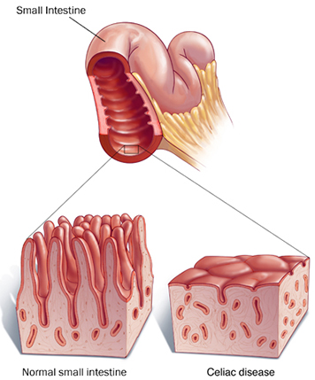
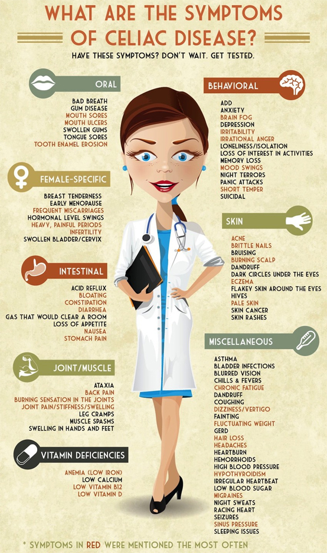

What is Celiac Disease?
Definition
Celiac (SEE-lee-ak) disease is a digestive condition triggered by consumption of the protein gluten, which is primarily found in bread, pasta, cookies, pizza crust and many other foods containing wheat, barley or rye. People with celiac disease who eat foods containing gluten experience an immune reaction in their small intestines, causing damage to the inner surface of the small intestine and an inability to absorb certain nutrients.
Celiac disease can cause abdominal pain and diarrhea. Eventually, the decreased absorption of nutrients (malabsorption) that occurs with celiac disease can cause vitamin deficiencies that deprive your brain, peripheral nervous system, bones, liver and other organs of vital nourishment.
No treatment can cure celiac disease. However, you can effectively manage celiac disease by changing your diet.
In the video below, Elisabeth Hasselbeck, a co-host on ABC's The View, discusses Celiac Disease with her doctor and author of Celiac Disease: A Hidden Epidemic, Peter H. R. Green, M.D.:
Causes
It's not clear what causes celiac disease. Doctors know that something happens in people with celiac disease to cause the body's immune system to overreact in response to gluten in food.
Normally, your small intestine is lined with tiny, hair-like projections called villi. Resembling the deep pile of a plush carpet on a microscopic scale, villi work to absorb vitamins, minerals and other nutrients from the food you eat. Celiac disease results in damage to the villi. Without prominent villi, the inner surface of the small intestine becomes less like a plush carpet and more like a tile floor, and your body is unable to absorb nutrients necessary for health and growth. Instead, nutrients such as fat, protein, vitamins and minerals are eliminated with your stool.
While the exact cause of celiac disease is unknown, doctors have discovered that it often runs in families. If someone in your family has been diagnosed with celiac disease, you may have an increased risk of the disease. Researchers have discovered that some gene mutations seem to increase the risk of celiac disease, but having those gene mutations doesn't mean you're certain to have celiac disease. This means that other risk factors play a role in whether you'll develop celiac disease.
Symptoms
There are no typical signs and symptoms of celiac disease. Most people with the disease have general complaints, such as intermittent diarrhea, abdominal pain and bloating.
Sometimes people with celiac disease may have no gastrointestinal symptoms at all. Celiac disease symptoms can also mimic those of other conditions, such as irritable bowel syndrome, gastric ulcers, Crohn's disease, parasite infections and anemia.
Celiac disease may also present itself in less obvious ways, including:
- Irritability or depression
- Anemia
- Stomach upset
- Joint pain
- Muscle cramps
- Skin rash
- Mouth sores
- Dental and bone disorders (such as osteoporosis)
- Tingling in the legs and feet (neuropathy)
Some indications of malabsorption of nutrients that may result from celiac disease include:
- Weight loss
- Diarrhea
- Abdominal cramps, gas and bloating
- General weakness and fatigue
- Foul-smelling or grayish stools that may be fatty or oily
- Stunted growth (in children)
- Osteoporosis
Treatment
Celiac disease has no cure, but can be effectively managed through a change in diet.
To manage the disease and prevent complications, it's crucial that you avoid all foods that contain gluten, including:
|
|
Your doctor may refer you to a dietitian, who can help you plan a healthy gluten-free diet.
Once you've removed gluten from your diet, inflammation in your small intestine will begin to subside, usually within several weeks, though you may start to feel better in just a few days. Complete healing and regrowth of the villi may take several months, or as long as two to three years. Healing in the small intestine tends to occur more quickly in children than it does in adults.
If you accidentally eat a product that contains gluten, you may experience abdominal pain and diarrhea. Some people experience no signs or symptoms after eating gluten, but this doesn't mean it's not harmful. Even trace amounts of gluten in your diet can be damaging, whether or not they cause signs or symptoms.